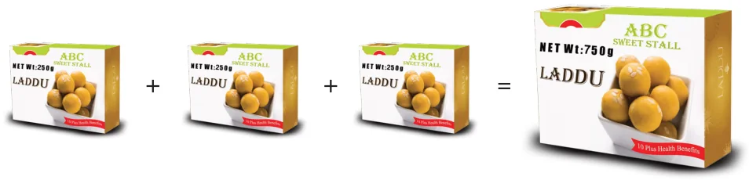
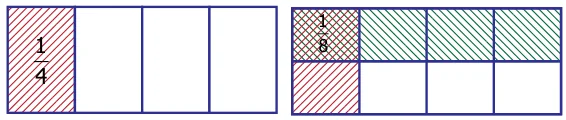
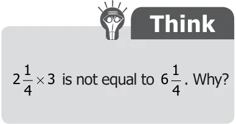
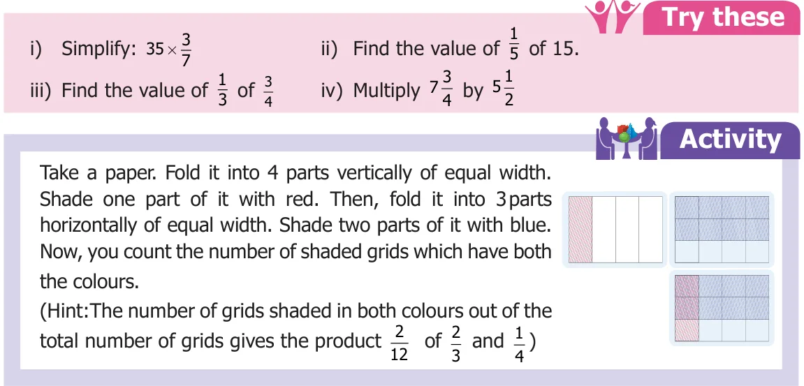

Think about the situation 1 (Multiplication of a fraction by a whole number)
Sunitha wanted to give \(\frac{1}{4}\ kg\) of sweets to each of her 3 friends. So she went to a sweet stall and she asked the salesman to give three \(\frac{1}{4}\ kg\) packets of sweets, how much sweet did she buy?
Solution Weight of three \(\frac{1}{4}\ kg\) packets of sweets \(= \frac{1}{4} + \frac{1}{4} + \frac{1}{4} = \frac{1+1+1}{4} = \frac{3}{4}\ kg\)

We can illustrate this in the following diagram. In each of these the shaded part is \(\frac{1}{4}\) of a circle. Can you find the shaded parts in 3 circles together?
To know the fraction of shaded part in all the three circles, we add the fractions which are represented in each of the circles. So \(3 \times \frac{1}{4} = \frac{3}{4}\).
The adjacent circle represents \(\frac{3}{4}\) parts of the circle.
Think about the situation 2 (Multiplication of a fraction using the operator 'of')
Kannan has 30 beads and Kanmani has one sixth of it. How many beads does Kanmani have?
Solution The number of beads that Kanmani has \(= \frac{1}{6}\) of 30 beads
\(= \frac{1}{6} \times 30 = \frac{30}{6}\)
\(= 5\) beads
Think about the situation 3 (Multiplication of a fraction by another fraction)
Sunitha bought three \(\frac{1}{4}\ kg\) sweet packets for her three friends from a sweet stall. But 6 of her friends had come to her home. So she decided to divide each \(\frac{1}{4}\ kg\) sweet packets into halves. If she has done in that way, what would be the weight of the sweet packet that each one of her friend will receive?
Solution The weight of the sweet packets that each one of her friends will receive = half of \(\frac{1}{4}\ kg\)
\(= \frac{1}{2}\) of \(\frac{1}{4}\ kg\)
\(= \frac{1}{2} \times \frac{1}{4}\)
\(\frac{1}{2}\) of \(\frac{1}{4}\) means the product of \(\frac{1}{2}\) and \(\frac{1}{4}\). This can be illustrated as follows. We shade 1 part out of 4 parts which represents \(\frac{1}{4}\). Now divide this horizontally into 2 equal parts and shade one part of it.

Here, the double shaded part represents the product \(\frac{1}{8}\) and it is got by finding the product of the numerators and the product of denominators as follows:
\(\frac{1}{2} \times \frac{1}{4} = \frac{1 \times 1}{2 \times 4} = \frac{1}{8}\)
Example 16 Maruthu, a milk man has 4 bottles of milk each containing \(1\frac{1}{2}\) litres. How much milk does he have in all?
Solution Since Maruthu has 4 bottles of milk and each containing \(1\frac{1}{2}\) litres, he has 4 times of \(1\frac{1}{2}\) litres of milk.
\(1\frac{1}{2} \times 4 = \left(1 + \frac{1}{2}\right) \times 4 = 4 + \frac{4}{2}\)
\(= 4 + 2 = 6\) litres.
Example 17 A man wants to fill \(3\frac{3}{4}\ kg\) of rice equally in 3 bags. How much rice does each bag contain?

Solution Each bag contains \(\frac{1}{3}\) of \(3\frac{3}{4}\ kg\) of rice.
That is \(\frac{1}{3} \times 3\frac{3}{4} = \frac{1}{3} \times \left(3 + \frac{3}{4}\right) = \left(\frac{3}{3}\right) + \left(\frac{1}{3} \times \frac{3}{4}\right)\)
\(= 1 + \frac{1}{4} = 1\frac{1}{4}\ kg\)
Example 18 In a juice shop, if a man prepared \(1\frac{1}{2}\) litres of juice from \(1\ kg\) of oranges, then how many litres of juice can be prepared from \(12\frac{3}{4}\ kg\) of oranges?
Solution The quantity of juice prepared from \(1\ kg\) of oranges \(= 1\frac{1}{2}\) litres
The quantity of juice prepared from \(12\frac{3}{4}\ kg\) of oranges
\(= 12\frac{3}{4} \times 1\frac{1}{2}\)
\(= \frac{51}{4} \times \frac{3}{2} = \frac{153}{8}\)
\(= 19\frac{1}{8}\) litres
